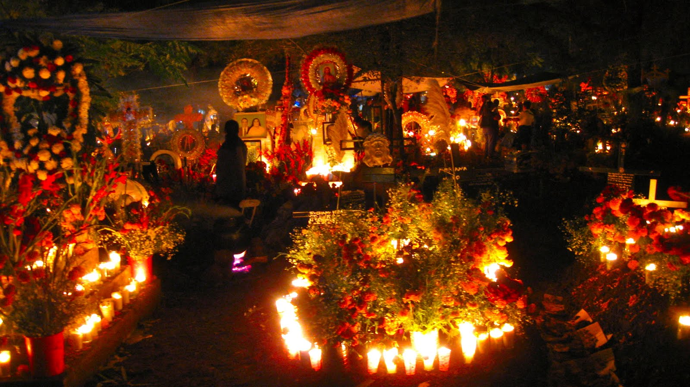

En la ceremonia de la ofrenda a los difuntos, en el cementerio de la isla de Janitzio en el lago de Pátzcuaro, del estado de Michoacán, México, la tradición del "Día de Muertos" se ha conservado en todo su vigor.
A las 6 de la tarde del día 1° de Noviembre, de cada año, comienza a oírse el toque de muertos, y con intervalos de medio minuto la campana sigue doblando hasta la madrugada.
Poco antes de la media noche las familias de la isla salen de sus casas rumbo al cementerio de la cercana ciudad de Pátzcuaro las personas se dirigen a la isla en sus canoas que semejan mariposas y que a la luz de miles de velas se antoja como un cuento. Los hombres embozados en sus sarapes, la mujeres ataviadas con sus mejores ropas y joyas más vistosas.
Para iluminar el camino cada grupo prende velas, la isla adquiere un aspecto fantástico, como millares de lucecitas, masas de sombras caminantes y el lento e interminable doblar de las campanas.
Los grupos se dirigen a las tumbas de sus familiares, las adornan con guirnaldas de flores, colocan ahí las bateas (charolas de madera) y los platones cargados de comida y frutas y prenden todas las velas que les sea posible.
A la media noche las mujeres se arrodillan ante las tumbas, los hombre entonan fúnebres alabanzas a los muertos, de cuando en cuando las mujeres desfloran flores de cempaxúchitl llevadas especialmente para ese objeto y riegan los pétalos sobre las tumbas. Así transcurren las horas hasta el amanecer.
Junto al cementerio, en el atrio de la parroquia se celebra una ceremonia, en ese lugar se reúnen las familias que no tienen muertos o cuyos deudos tienen más de tres años de enterrados.
No llevan ramos ni flores, solamente velas y sus bateas con ofrendas, así permanecen mudos a lo largo de toda la noche.
